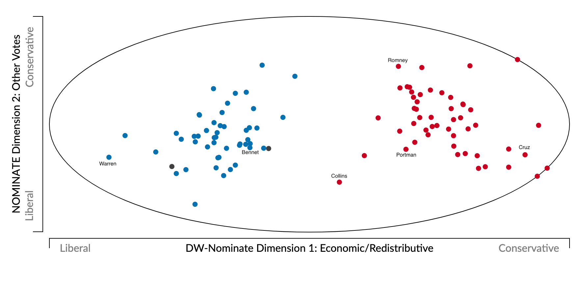
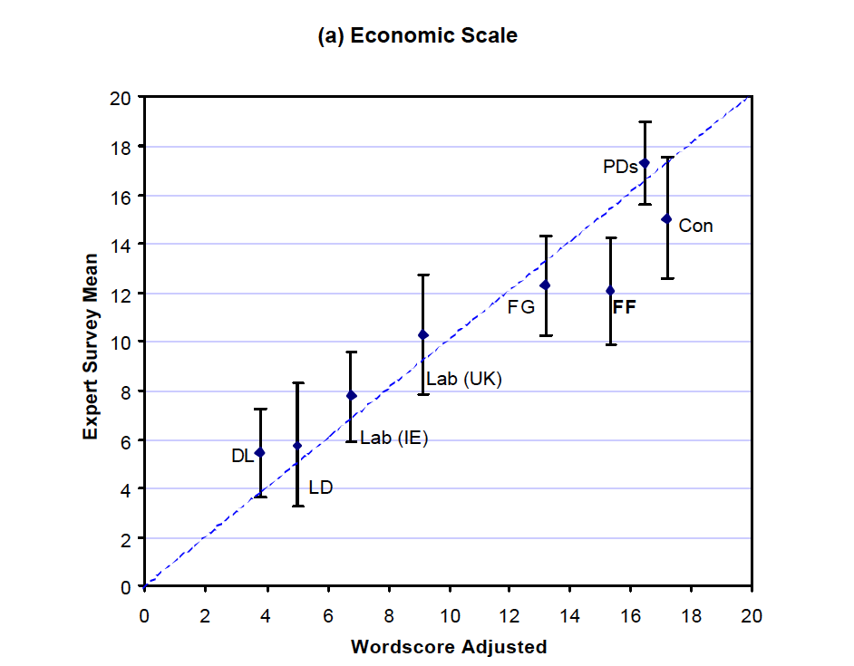
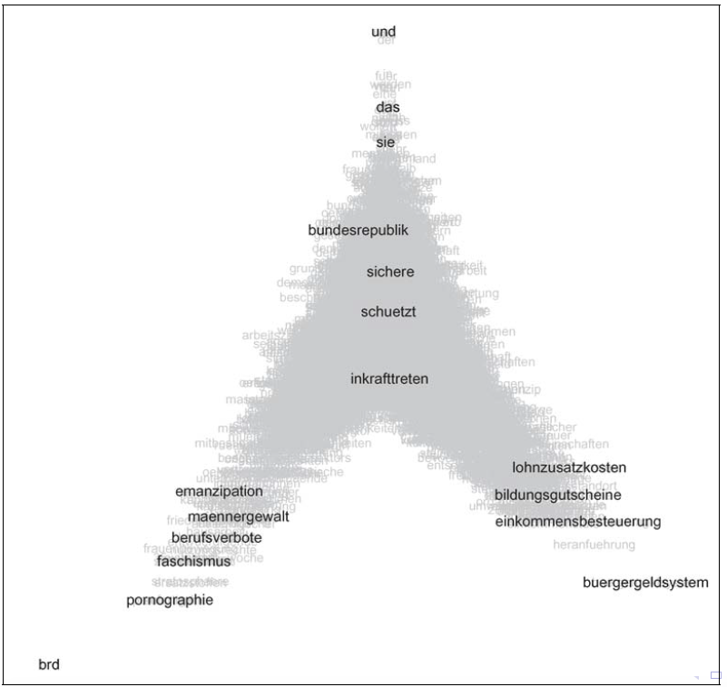
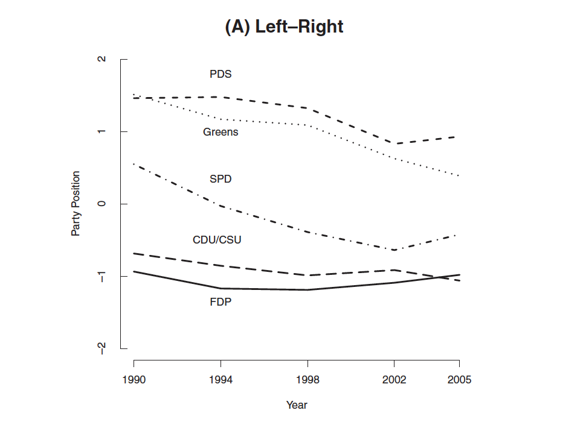
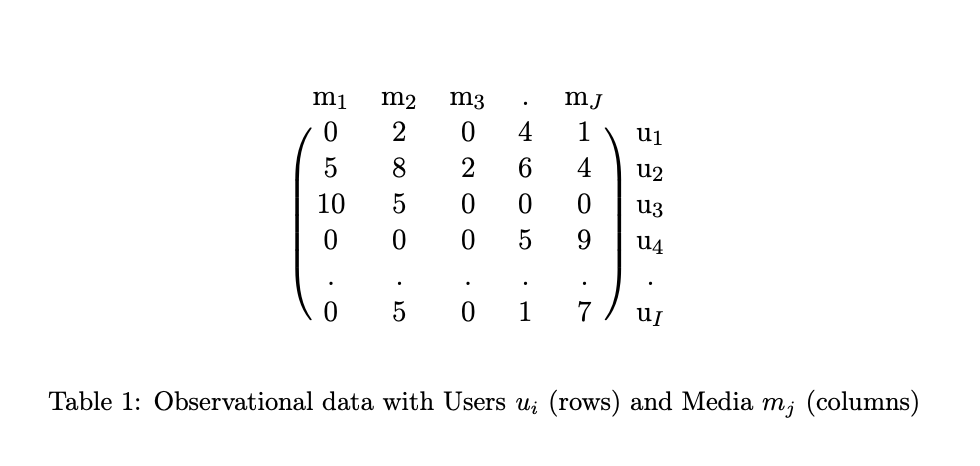
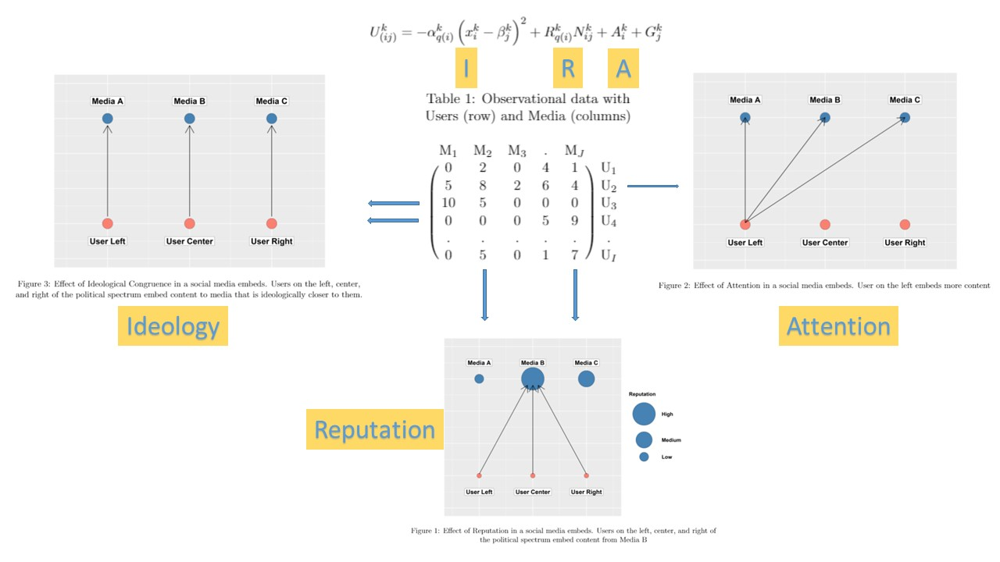

PPOL 6801 - Text as Data - Computational Linguistics
Week 10: Scaling Models for Text
Plans for Today:
Overview of scaling models
Scaling models using text
supervised models: wordscore
unsupervised models: wordfish
- But remember we saw the Doc2vec last week
Scaling models with network data
Many questions depends on policy positions
Many substantive questions in policy and politics depends on estimating ideological preferences:
- Is polarization increasing over time?
- are parties moving together over time?
- Do governments/coalitions last longer conditional on:
- how homogeneous coalition is?
- distance between coalition and congress ideal points?
- distance between coalition and median voter?
- Does ideology affect policy decisions?
- Economic cycles and elections?
- Globalization and the social welfare state?
- Does motivated reasoning affects beliefs/sharing of online misinformation?
Many more examples ….
Scaling with without computational text analysis
Surveys
- Ask elites or regular voters about policy preference, and scale them in some sort of political continuum.
- Challenges:
- Expensive
- Sources of bias: non-response, social desirebility, strategic responses, to name a few
- Cannot be used for historical data
Behavioral data (for example, roll-call voting):
- Politicians vote on proposals (or judges make decisions) that are close to their ideal points
- Use statistical methods (mostly matrix factorization) to estimate orthogonal dimensions
- Nominate Scores
- Challenge
- Most times politicians vote for many things other than ideology
- Face-Validity: AOC for example often place as a centrist (not always voting with democrats)
Content Analysis using Text
- Manually label content of political manifestos (Comparative Manifestos Project)
- Challenges:
- Really expensive
- Costly to translate to other languages
- Heavily dependent on substantive knowledge
Scaling models with computational text analysis
In the past 20 years, computational text analysis has been widely used for building scaling models.
Advantages: fast, reliable, deals with large volumes of text, and easy to translate to other domains/language.
Wordscore: supervised approach, mimic naive bayesian models, start with reference, and score virgin texts.
Wordfish: unsupervised approach, learn word occurrence from the documents using a ideal-points model.
Wordscore (Laver, Benoit, Garry, 2003, APSR)
Step 1: Begin with a reference set (training set) of texts that have known positions.
- Get a speech by AOC , give it -1 score.
- Get a speech by MTG, give it a +1 score.
Step 2: Generate word scores from these reference texts
- Pretty much like a Naive Bayes
Step 3: Score the virgin texts (test set) of texts using those word scores
- scale virgin score to the same original metric (-1 to +1)
- calculate confidence intervals
WordScore Calculation
Learning Words
\[ P_{wr} = \frac{F_{wr}}{\sum_r F_{wr}}\] - \(P_{wr}\): Probability of word \(w\) being from reference document \(r\)
- \(F_{wr}\): Frequency of word \(w\) in reference text \(r\)
Scoring Words
\[S_{wd} = \sum_r (P_{wr} \cdot A_{rd}) \]
\(S_{wd}\): Score of word \(w\) in dimension \(d\)
\(A_{rd}\): Pre-defined position of reference text \(r\) in dimension \(d\)
\(A_{rd}\) will be -1 for liberal and +1 for conservative documents, for example.
Scoring virgin texts
\[ S_{vd} = \sum_w (F_{wv} · S_{wd}) \] - \(S_{vd}\) weighted average of the scores by word frequency.
Example
Republican manifesto uses `wall’ 25 times in 1000 words, while Democrat use it only 5 times. Assume 1 for republican and -1 for democrat
\[P_{wr} = 0.83\]
\[P_{wl} = 0.16 \] \[ S_w = 0.83*1 + -1*.16 = 0.66\]
Virgin text 1 mentions wall 200 times in 1000 words ~ \(0.2 * 0.66 = 0.132\)
Virgin text 2 mentions wall 1 times in 1000 words ~ \(0.001 * 0:66 = 0.0066\)
Repeat for all words!
Results

Wordfish, (Slapin and Proksch, 2008, AJPS)
Same assumptions as in Wordscore (word usage provides information about policy placement), but in an unsupervised setting and with fully specified language model.
The count of word \(j\) from party \(i\) , in year \(t\):
\[ y_{ijt} \sim Pois(\lambda)\]
\[ \lambda_{ijt}=\exp({\alpha_{it} + \psi_j + \beta_j\times\omega_{it}}) \]
\(\alpha_{it}\): fixed effect(s) for party \(i\) in time \(t\) ~ deal with parties that write too much
\(\psi_j\): word fixed effect: some parties just use certain words more (e.g. their own name)
\(\beta_j\): word specific weights (discrimination parameter, adds more information than simple usage)
\(\omega_{it}\) estimate of party’s position in a given year.
Estimation
\[ \lambda_{ijt}=\exp({\alpha_{it} + \psi_j + \beta_j\times\omega_{it}}) \]
Nothing on RHS is known: everything needs to be estimated.
Use Expectation Maximization (EM) algorithm (same as we could use for topic models):
Initialize values based on counts in the data
E-Step: run a Poisson regression holding word parameters fixed, and estimating the party parameters
M-Step: run a Poisson regression holding party parameters fixed, and estimating the word parameter
Iterate until convergence
Other option: Bayesian Estimation with Gibbs sampling.
Results I

Results II

Scaling models with network data
Spatial Following Model, Barbera 2015
With the emergence of social media data, not only more text data has become available, but also network data. Some of the most interesting developments in computational social science research in the past years has been on using this data to estimate ideological positions for a LARGE number of social media users.
Assumption: users prefer to follow political accounts they perceive to be ideologically close to their own position.
Following decisions contain information about allocation of scarce resource: attention
Selective exposure: preference for information that reinforces current views
Statistical model that builds on assumption to estimate positions of both individuals and political accounts
All you need is a matrix!

Statistical Model
Users’ and political accounts’ ideology (\(theta_i\) and \(\phi_j\) ) are defined as latent variables to be estimated.
Data: “following” decisions, a matrix of binary choices (Y).
Probability that user i follows political account j is
\[P(y_{ij} = 1) = logit^{-1} (\alpha_j + \beta_i - \zeta(\theta_i - \phi_j)^2)\]
with latent variables:
\(\theta_i\) measures ideology of user i
\(\phi_j\) measures ideology of political account j
\(\alpha_j\) measures popularity of political account j
\(\beta_i\) measures political interest of user i
Ventura et al’ News Sharing Model

Statistical Model
The estimation of the utility function for sharing uses a multilevel overdispersed poisson model.
\[y_{ij} \sim \mbox{Po}(\mu_i)\]
\[\mu_i = \exp(\alpha_{i[q]}\left(x_{i}-L_{j}\right)^2 + A_{[q]} + R_{[j]} + \gamma_{[i]})\]
Where:
\(y_{i}\) = Number of links embedded by user x media
\(\alpha_{q}\) = Random Slope by quantile
\(A_{q}\) = Random intercept by quantile
\(R_{j}\) = Random intercept by media outlet
\(\gamma_{[i]}\) = Overdispersion parameter